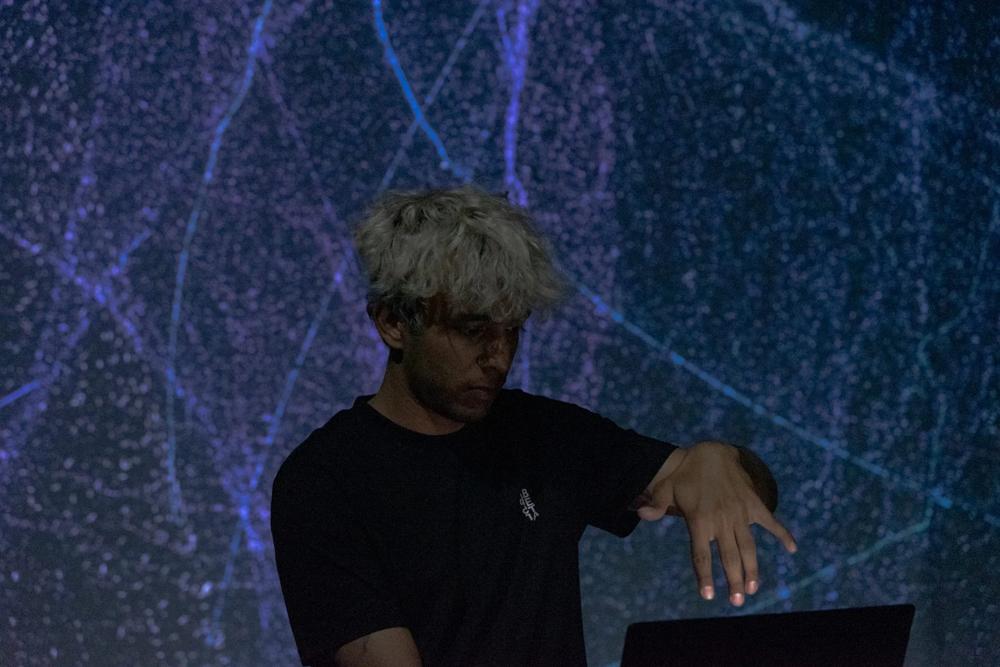

Gesture-Controlled Performance System for Slow Music
GESTURE INTERFACES • LIVE A/V • EMBODIED SYSTEMS
MediaPipe and TouchDesigner map body movement to real-time sound and generative visuals. First shown at Fever Dream; since then it has served as a modular live A/V platform—gestures drive glitch and drone textures, pulses, and projections—with an intentionally slow, embodied approach to control and coding. G.C.P.S.S.M. (Gesture-Controlled Performance System for Slow Music) is the slow-music branch of this system: gesture and speed control rework older material as samples, released on asymmetrica.
